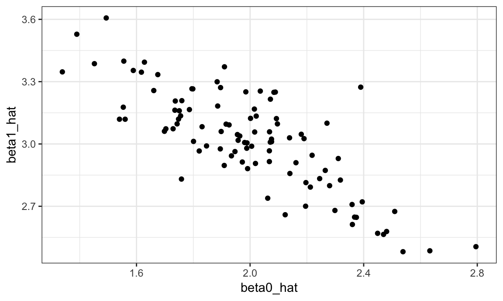
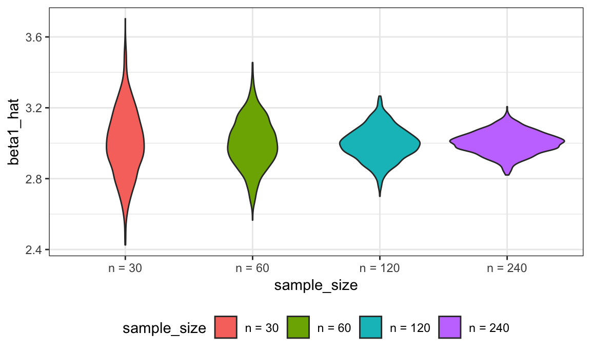
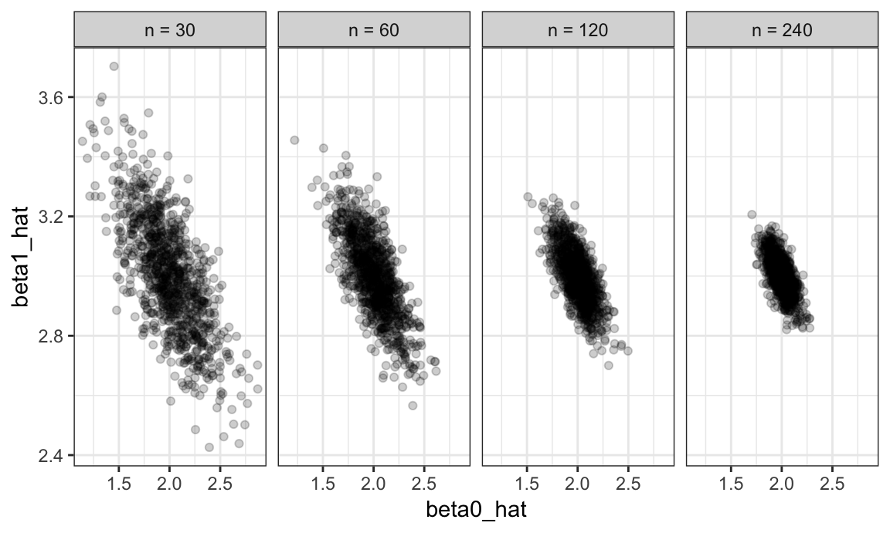
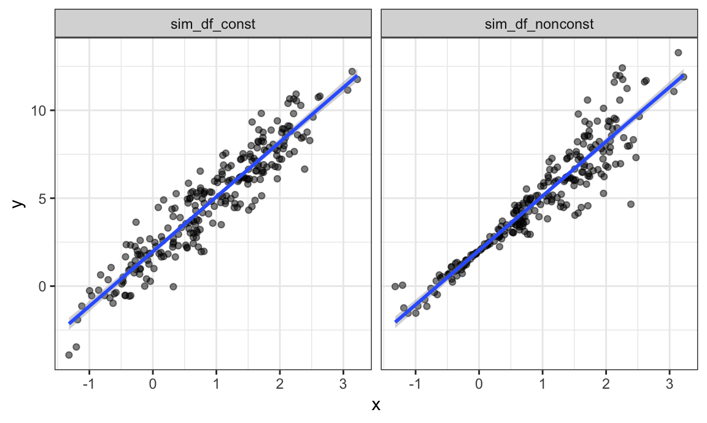
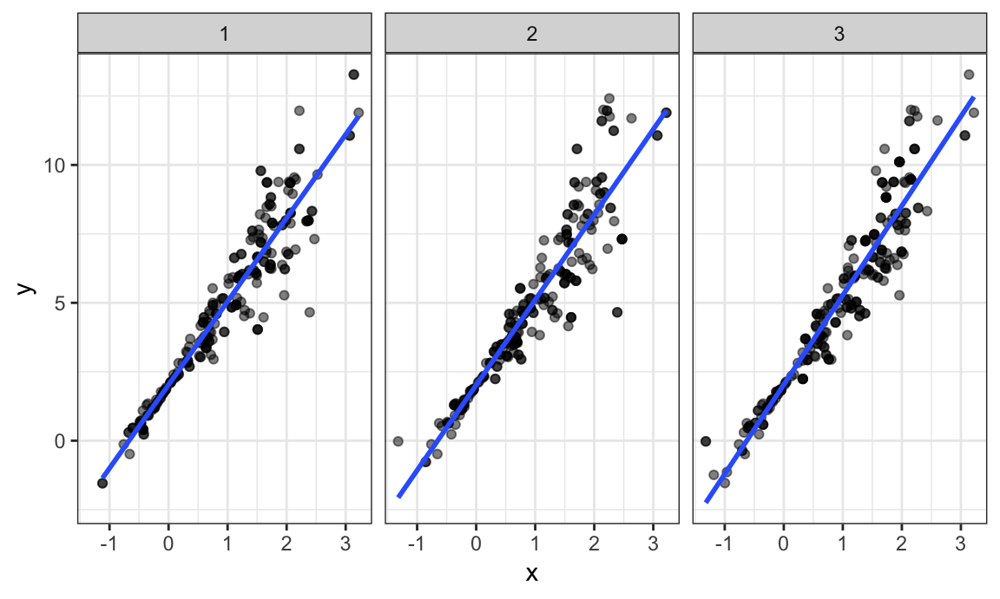
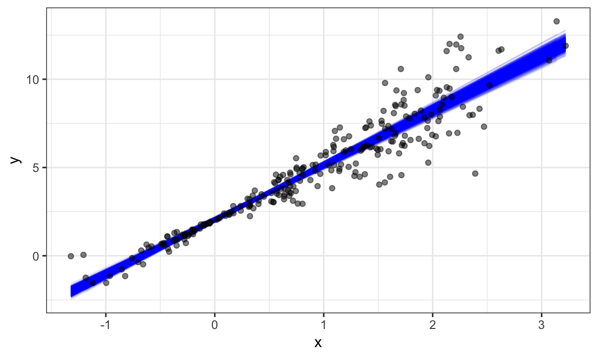

We’ve noted that functions are helpful when you repeat code more than twice; we’ve also noted that a lot of statistical methods involve doing the same thing a large number of times. Simulation is a common statistical approach that takes advantage of the ability to iterate many times using computers.
This is the third module in the Iteration topic; the relevant slack channel is here.
I’ll write code for today’s content in a new R Markdown document called listcols_and_bootstrapping.Rmd in the example_iteration directory / repo. The code chunk below loads the usual packages.
library(tidyverse)
theme_set(theme_bw())
theme_update(legend.position = "bottom")
set.seed(1)Things are gonna get a little weird…
Last class we wrote a short function to simulate data from a simple linear regression, fit the regression model, and return estimates of regression coefficients. Specifically, we generate data from \[ y_i = \beta_0 + \beta_1 x_i + \epsilon_i \] for subjects \(1 \leq i \leq n\) with \(\epsilon_i \sim N[0,1]\) and return estimates \(\hat{\beta}_0, \hat{\beta}_1\). That function is below.
sim_regression = function(n, beta0 = 2, beta1 = 3) {
sim_data = tibble(
x = rnorm(n, mean = 1, sd = 1),
y = beta0 + beta1 * x + rnorm(n, 0, 1)
)
ls_fit = lm(y ~ x, data = sim_data)
tibble(
beta0_hat = coef(ls_fit)[1],
beta1_hat = coef(ls_fit)[2]
)
}Important statistical properties of estimates \(\hat{\beta}_0, \hat{\beta}_1\) are established under the conceptual framework of repeated sampling. If you could draw from a population over and over, your estimates will have a known mean and variance: \[ \hat{\beta}_0 \sim \left[\beta_0, \sigma^2 \left(\frac{1}{n} + \frac{\bar{x}}{\sum (x_i - \bar{x})^2}\right) \right] \mbox{ and } \hat{\beta}_1 \sim \left[\beta_1,\frac{\sigma^2}{\sum (x_i - \bar{x})^2} \right] \] (Because our simulation design generates errors from a Normal distribution we also know that the estimates follow a Normal distribution, although that’s not guaranteed by least squares estimation.)
In the real world, drawing samples is time consuming and costly, so “repeated sampling” remains conceptual. On a computer, though, drawing samples is pretty easy. That makes simulation an appealing way to examine the statistical properties of your estimators.
Let’s run sim_regression() 100 times to see the effect of randomness in \(\epsilon\) on estimates \(\hat{\beta}_0, \hat{\beta}_1\).
output = vector("list", 100)
for (i in 1:100) {
output[[i]] = sim_regression(30)
}
sim_results = bind_rows(output)Taking a look at the for loop we used to create these results, you might notice that there’s no input list – the sequence is used to keep track of the output but doesn’t affect the computation performed inside the for loop. In cases like these, the purrr::rerun function is very handy.
sim_results =
rerun(100, sim_regression(30, 2, 3)) %>%
bind_rows()Structurally, rerun is a lot like map – the first argument defines the amount of iteration and the second argument is the function to use in each iteration step. As with map, we’ve replaced a for loop with a segment of code that makes our purpose much more transparent but both approaches give the same results.
Let’s make some quick plots and compute some summaries for our simulation results.
sim_results %>%
ggplot(aes(x = beta0_hat, y = beta1_hat)) +
geom_point()
sim_results %>%
gather(key = parameter, value = estimate, beta0_hat:beta1_hat) %>%
group_by(parameter) %>%
summarize(emp_mean = mean(estimate),
emp_var = var(estimate)) %>%
knitr::kable(digits = 3)| parameter | emp_mean | emp_var |
|---|---|---|
| beta0_hat | 1.995 | 0.081 |
| beta1_hat | 3.021 | 0.056 |
This is great! We’ve seen how our estimates are distributed under our simulation scenario, and can compare empirical results to theoretical ones. In this way, we can build intution for fundamental statistical procedures under repeated sampling in a way that’s not possible with single data sets.
Sample size makes a huge difference on the variance of estimates in SLR (and pretty much every statistical method). Let’s try to clarify that effect through simulating at a few sample sizes.
I’ll start this process with a for loop around the code I established above using rerun (I could start from scratch by nesting one for loop in another for loop, but let’s not).
n_list = list("n_30" = 30,
"n_60" = 60,
"n_120" = 120,
"n_240" = 240)
output = vector("list", length = 4)
for (i in 1:4) {
output[[i]] = rerun(100, sim_regression(n_list[[i]])) %>%
bind_rows
}After this loop, output is a list of 4 data frames; each data frame contains the results of 100 simulations at different sample sizes.
Before we spend time looking at the results of the simulation, let’s recast this using map. I want to use a single function in my call to map_df, so I’m going to write a wrapper for the call to rerun that allows me to change the parameters of the simulation (i.e. the argument to sim_regression) and the number of simulation replicates (i.e. the first argument to rerun). Once I have this, I’ll call map_df to perform the complete simulation.
simulate_n_regressions = function(n_runs = 100, n, beta0 = 2, beta1 = 3) {
rerun(n_runs, sim_regression(n, beta0, beta1)) %>%
bind_rows()
}
sim_results =
map_df(.x = n_list, ~ simulate_n_regressions(n = .x), .id = "sample_size") Using a different call, I could increase the number of simulation runs or vary the parameters in the regression model:
sim_results =
map_df(.x = n_list, ~ simulate_n_regressions(n = .x, n_runs = 1000, beta0 = 2, beta1 = 3),
.id = "sample_size") Let’s take a look at what we’ve accomplished in our simulations! First I’ll take a look at the distribution of slope estimates across sample sizes.
sim_results %>%
mutate(sample_size = fct_inorder(sample_size)) %>%
ggplot(aes(x = sample_size, y = beta1_hat, fill = sample_size)) +
geom_violin()
These estimates are centered around the truth (3) for each sample size, and the width of the distribution shrinks as sample size grows.
Next, I’ll look at the bivariate distribution of intercept and slope estimates across sample sizes.
sim_results %>%
mutate(sample_size = fct_inorder(sample_size)) %>%
ggplot(aes(x = beta0_hat, y = beta1_hat)) +
geom_point(alpha = .2) +
facet_grid(~sample_size)
The variability in the slope estimates was shown in the violin plot, but now we have a sense for the bivariate distribution of intercepts and slopes. Estimates of the intercept and slope are correlated with each other; this is expected from theoretical results describing the joint distribution of estimated regression coefficients.
Lastly I’ll look at the empirical mean and variance of these estimates.
sim_results %>%
gather(key = parameter, value = estimate, beta0_hat:beta1_hat) %>%
group_by(parameter, sample_size) %>%
summarize(emp_mean = mean(estimate),
emp_var = var(estimate)) %>%
knitr::kable(digits = 3)| parameter | sample_size | emp_mean | emp_var |
|---|---|---|---|
| beta0_hat | n_120 | 2.003 | 0.017 |
| beta0_hat | n_240 | 1.996 | 0.008 |
| beta0_hat | n_30 | 1.998 | 0.073 |
| beta0_hat | n_60 | 2.000 | 0.037 |
| beta1_hat | n_120 | 2.997 | 0.008 |
| beta1_hat | n_240 | 3.003 | 0.004 |
| beta1_hat | n_30 | 3.003 | 0.036 |
| beta1_hat | n_60 | 3.000 | 0.019 |
These values are consistent with the formulas presented above. This kind of check is a useful way to support derivations (although they don’t serve as a formal proof in any way).
Bootstrapping is based on the idea of repeated sampling which underlies most approaches to statistical inference. Traditionally, the distribution of a sample statistic (sample mean, SLR coefficients, etc.) for repeated, random draws from a population has been established theoretically. These theoretical distributions make some assumptions about the underlying population from which samples are drawn, or depend on large sample sizes for asymptotic results.
In cases where the assumptions aren’t met, or sample sizes aren’t large enough for asymptotics to kick in, it is still necessary to make inferences using the sample statistic. In these cases, drawing repeatedly from the original population would be great – one could simple draw a lot of samples and look at the empirical (rather than theoretical) distribution. But, as we said in iteration and simulation, repeated sampling just doesn’t happen in the real world.
Repeated sampling can happen on a computer though. To bootstrap, one draws repeated samples (with the same sample size) from the original sample with replacement to mimic the process of drawing repeated samples from the population. The bootstrap samples will differ from the original sample, and the sample statistic of interest (sample mean, SLR coefficients, etc.) can be computed for each bootstrap sample. Looking at the distribution of the statistic across samples gives a sense of the uncertainty in the estimate.
Let’s look at a couple of simulated data sets. Both are generated from a simple linear regression, but they have different error distributions.
set.seed(10)
n_samp = 250
sim_df_const = tibble(
x = rnorm(n_samp, 1, 1),
error = rnorm(n_samp, 0, 1),
y = 2 + 3 * x + error
)
sim_df_nonconst = sim_df_const %>%
mutate(
error = error * .75 * x,
y = 2 + 3 * x + error
)
bind_rows(
mutate(sim_df_const, data = "sim_df_const"),
mutate(sim_df_nonconst, data = "sim_df_nonconst")
) %>%
ggplot(aes(x = x, y = y)) +
geom_point(alpha = .5) +
stat_smooth(method = "lm") +
facet_grid(~data) 
These datasets have roughly the same overall variance, but the left panel shows data with constant variance and the right panel shows data with non-constant variance. For this reason, ordinary least squares should provide reasonable estimates in both cases, but inference is standard inference approaches may only be justified for the data on the left.
The output below shows results from fitting simple linear regressions to both datasets.
lm(y ~ x, data = sim_df_const) %>% summary()
##
## Call:
## lm(formula = y ~ x, data = sim_df_const)
##
## Residuals:
## Min 1Q Median 3Q Max
## -3.00497 -0.75408 -0.05951 0.80840 2.54356
##
## Coefficients:
## Estimate Std. Error t value Pr(>|t|)
## (Intercept) 1.96777 0.09435 20.86 <2e-16 ***
## x 3.11086 0.07193 43.24 <2e-16 ***
## ---
## Signif. codes: 0 '***' 0.001 '**' 0.01 '*' 0.05 '.' 0.1 ' ' 1
##
## Residual standard error: 1.075 on 248 degrees of freedom
## Multiple R-squared: 0.8829, Adjusted R-squared: 0.8824
## F-statistic: 1870 on 1 and 248 DF, p-value: < 2.2e-16
lm(y ~ x, data = sim_df_nonconst) %>% summary()
##
## Call:
## lm(formula = y ~ x, data = sim_df_nonconst)
##
## Residuals:
## Min 1Q Median 3Q Max
## -4.7759 -0.4854 -0.0520 0.4214 3.3971
##
## Coefficients:
## Estimate Std. Error t value Pr(>|t|)
## (Intercept) 2.03488 0.09267 21.96 <2e-16 ***
## x 3.09472 0.07066 43.80 <2e-16 ***
## ---
## Signif. codes: 0 '***' 0.001 '**' 0.01 '*' 0.05 '.' 0.1 ' ' 1
##
## Residual standard error: 1.056 on 248 degrees of freedom
## Multiple R-squared: 0.8855, Adjusted R-squared: 0.8851
## F-statistic: 1918 on 1 and 248 DF, p-value: < 2.2e-16Despite the very different error structures, standard errors for coefficient estimates are similar in both cases!
We’ll use the bootstrap to make inference for the data on the right. This is intended largely as an illustration for how to use the bootstrap in cases where the theoretical distribution is “unknown”, although for these data in particular weighted least squares is more appropriate.
Let’s write a quick function to generate our bootstrap samples. This function should have the data frame as the argument, and should return a sample from that dataframe drawn with replacement.
boot_sample = function(df) {
sample_frac(df, replace = TRUE)
}We should also do a quick check to see if this is working.
boot_sample(sim_df_nonconst)
## # A tibble: 250 x 3
## x error y
## <dbl> <dbl> <dbl>
## 1 1.33 -1.52 4.47
## 2 0.691 0.637 4.71
## 3 0.170 0.305 2.81
## 4 -0.0626 0.0265 1.84
## 5 -0.963 -0.248 -1.14
## 6 1.71 -2.57 4.57
## # ... with 244 more rowsThat looks about right.
We’re going to draw repeated samples with replacement, and then analyze each of those samples separately. It would be really great to have a data structure that makes it possible to keep track of everything. Maybe a list column??!
Let’s give that a try:
boot_straps = data_frame(
strap_number = 1:1000,
strap_sample = rerun(1000, boot_sample(sim_df_nonconst))
)
boot_straps
## # A tibble: 1,000 x 2
## strap_number strap_sample
## <int> <list>
## 1 1 <tibble [250 × 3]>
## 2 2 <tibble [250 × 3]>
## 3 3 <tibble [250 × 3]>
## 4 4 <tibble [250 × 3]>
## 5 5 <tibble [250 × 3]>
## 6 6 <tibble [250 × 3]>
## # ... with 994 more rowsWe can do a few of quick checks to make sure this has worked as intended. First we’ll look at a couple of bootstrap samples.
boot_straps %>%
filter(strap_number %in% 1:2) %>%
mutate(strap_sample = map(strap_sample, ~arrange(.x, x))) %>%
pull(strap_sample)
## [[1]]
## # A tibble: 250 x 3
## x error y
## <dbl> <dbl> <dbl>
## 1 -1.12 -0.187 -1.54
## 2 -1.12 -0.187 -1.54
## 3 -0.759 0.146 -0.131
## 4 -0.675 0.324 0.298
## 5 -0.675 0.324 0.298
## 6 -0.658 -0.509 -0.483
## # ... with 244 more rows
##
## [[2]]
## # A tibble: 250 x 3
## x error y
## <dbl> <dbl> <dbl>
## 1 -1.32 1.94 -0.0246
## 2 -0.854 -0.210 -0.771
## 3 -0.854 -0.210 -0.771
## 4 -0.759 0.146 -0.131
## 5 -0.658 -0.509 -0.483
## 6 -0.627 0.514 0.634
## # ... with 244 more rowsSeems okay – some values are repeated, some don’t appear in both datasets. Next I’ll use ggplot to show some of these datasets, and to include a linear fit for each.
boot_straps %>%
filter(strap_number %in% 1:3) %>%
unnest() %>%
ggplot(aes(x = x, y = y)) +
geom_point(alpha = .5) +
stat_smooth(method = "lm", se = FALSE) +
facet_grid(~strap_number) 
This shows some of the differences across bootstrap samples, and shows that the fitted regression lines aren’t the same for every bootstrap sample.
My goal, of course, isn’t to analyze bootstrap samples by plotting them – I’d like to get a sense of the variability in estimated intercepts and slopes across all my bootstrap samples.
To do that, I’ll use the analytic pipeline we established above: fit the model; tidy the output; unnest and examine the results. The code chunk below uses this pipeline to look at bootstrap standard errors for the estimated regression coefficients.
bootstrap_results =
boot_straps %>%
mutate(models = map(strap_sample, ~lm(y ~ x, data = .x) ),
results = map(models, broom::tidy)) %>%
select(-strap_sample, -models) %>%
unnest() %>%
group_by(term) %>%
summarize(boot_se = sd(estimate))
bootstrap_results
## # A tibble: 2 x 2
## term boot_se
## <chr> <dbl>
## 1 (Intercept) 0.0524
## 2 x 0.0822Comparing these to the results of ordinary least squares, we see that the standard error for the intercept is much smaller and the standard error for the intercept is a bit larger. This is reasonable, given the non-constant variance in the data given smaller residuals around zero and larger residuals in the the tails of the x distribution.
In this case, we can expand the three-panel plot we showed previously to visualize the results of our bootstrap process.
boot_straps %>%
unnest() %>%
ggplot(aes(x = x, y = y)) +
geom_line(aes(group = strap_number), stat = "smooth", method = "lm", se = FALSE, alpha = .1, color = "blue") +
geom_point(data = sim_df_nonconst, alpha = .5)
In comparison to the standard error bands in our previous plot (which are based on OLS), the distribution of regression lines is narrower near \(x = 0\) and wider at the ends of the \(x\) distribution.
bootstrapBootstrapping is common enough that it’s been automated, to some degree, in the modelr::boostrap function. This function makes it easy to draw bootstrap samples, and stores them in a mostly-helpful way – as a resample object that can be converted to and treated like a data frame.
library(modelr)
boot_straps =
sim_df_nonconst %>%
bootstrap(n = 1000)
boot_straps$strap[[1]]
## <resample [250 x 3]> 77, 192, 117, 181, 71, 156, 25, 164, 5, 190, ...
as_data_frame(boot_straps$strap[[1]])
## # A tibble: 250 x 3
## x error y
## <dbl> <dbl> <dbl>
## 1 -0.480 0.0834 0.644
## 2 2.00 -1.14 6.85
## 3 2.04 1.27 9.39
## 4 1.43 -0.132 6.14
## 5 1.38 1.09 7.24
## 6 -1.32 1.94 -0.0246
## # ... with 244 more rowsLet’s repeat our analysis pipeline using the bootstrap function instead of our own process for drawing samples with replacement.
sim_df_nonconst %>%
bootstrap(n = 1000) %>%
mutate(models = map(strap, ~lm(y ~ x, data = .x) ),
results = map(models, broom::tidy)) %>%
select(-strap, -models) %>%
unnest() %>%
group_by(term) %>%
summarize(boot_se = sd(estimate))
## # A tibble: 2 x 2
## term boot_se
## <chr> <dbl>
## 1 (Intercept) 0.0545
## 2 x 0.0821The results are the same (up to resampling variability), and the code to get here is pretty clean.
Also, check this out – to bootstrap the dataset with constant error variance, we only have to change the input dataframe!
sim_df_const %>%
bootstrap(n = 1000) %>%
mutate(models = map(strap, ~lm(y ~ x, data = .x) ),
results = map(models, broom::tidy)) %>%
select(-strap, -models) %>%
unnest() %>%
group_by(term) %>%
summarize(boot_se = sd(estimate))
## # A tibble: 2 x 2
## term boot_se
## <chr> <dbl>
## 1 (Intercept) 0.0871
## 2 x 0.0652These results generally agree with the output of the OLS procedure, which is nice.
List columns take some getting used to; there are some materials to help with that.
Boostrapping and resampling are also new concepts; the materials below explore these using tidyverse approaches.
modelr package has a pageThe code that I produced working examples in lecture is here.